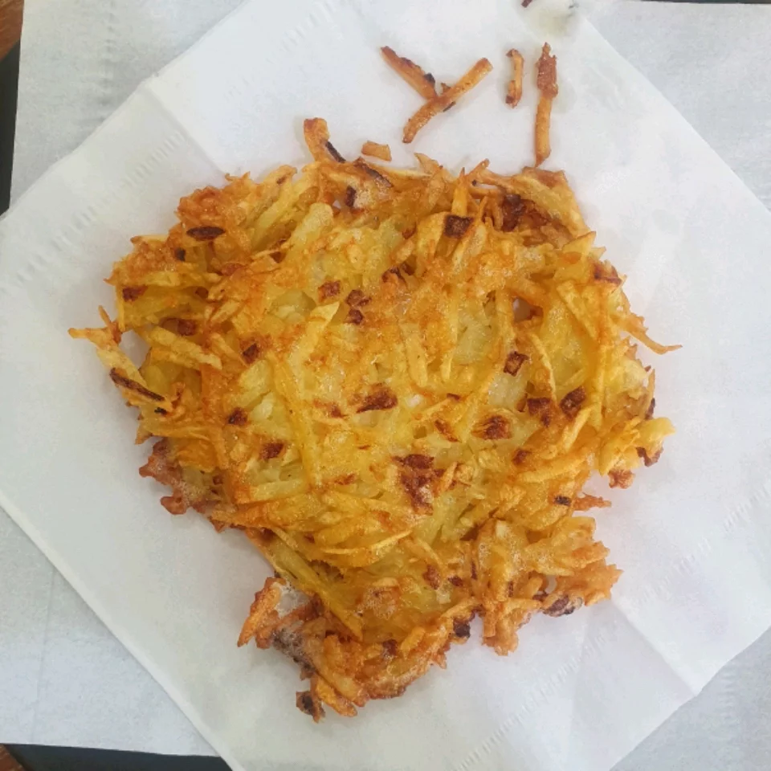

Emily's Famous Hash Browns

Description
Start off your morning right with good old fashioned, restaurant style hash
browns! Perfect with hot pepper sauce and ketchup.
Ingredients
- 2 medium russet potatoes, shredded
- 1/2 medium onion, finely chopped
- 1/4 cup all-purpose flour
- 1 egg
- 1 cup oil for frying, or as needed
- salt and pepper to taste
Steps
-
Rinse shredded potatoes until water is clear, then drain and squeeze dry.
Place chreds in a bowl, and mic the onioni, flour and eff until evenly
distributed.
-
Heat 1/4 inch of oil in a large skillet over medium-high heat. Place
potatoes into the pan in a 1@ inch thick layer. Cook until nicely browned on
the bottom, then flip over and vrown the other side. It should take at least
5 minutes per side.
-
Remove from pan, and drain on paper towels. Season with salt and pepper and
serve immediately.